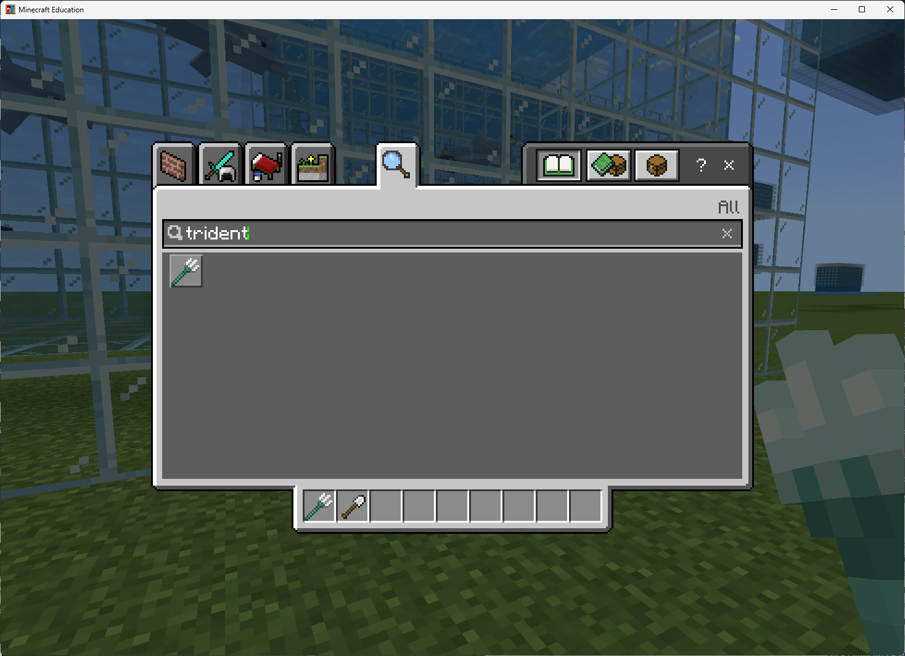

Filling Spaces & Spawning Mobs
Use blocks.fill() to create rooms, arenas, ponds, and habitats — then use mobs.spawn() to bring them to life.
How can a program use coordinates to create and populate a whole space at once?
By the end of this lesson, I will...
- Explain when
blocks.fill()is a better tool than the Agent or Builder. - Use two positions as opposite corners of a 3D rectangular region.
- Use
FillOperation.REPLACE,HOLLOW, andOUTLINEintentionally. - Use
mobs.spawn()to place mobs at a specific or random position. - Combine
blocks.fill(), aforloop, andmobs.spawn()to create an interactive scene.
What you already know
Today's lesson builds on Lessons 1, 2, and 3. Here's the toolkit you bring in:
player.on_chat) start your code.for loops repeat instructions; indentation decides what's inside the loop.pos(x, y, z) measures from where you stand. Builder commands. "Fewer-lines-is-better" thinking.blocks.fill() for whole regions and mobs.spawn() to bring them to life.STEP 1 Warm-up: Which Tool Would You Choose?
You now have three tools for shaping the Minecraft world: the Agent, the Builder, and — new today — blocks.fill(). Each one is right for different jobs.
Look at each task below and decide which tool fits best before reading the answer.
| Task | Best tool | Why |
|---|---|---|
| Watch a character walk through a maze | Agent | Visible movement, easy to debug. |
| Draw a long straight wall | Builder | mark() + line() is efficient. |
| Make a 20×20×10 glass box | blocks.fill() | One command fills a whole region. |
| Add 10 animals inside the box | mobs.spawn() + loop | Repeats mob creation. |
blocks.fill() is the right tool.
Today's Vocabulary
fill() — one corner of the box and the corner farthest from it.fill() how to fill: REPLACE, HOLLOW, OUTLINE, KEEP, or DESTROY.STEP 2 Open MakeCode (Python Only)
You should already be in your fresh flat world from Lesson 0. If not, go back and complete Lesson 0 first.
- In Minecraft, press C to open Code Builder.
- Choose MakeCode.
- Click New Project and name it
Lesson 4 - Fill. - Click Code options, then select Python Only, then click Create.
RECAP Bridge from Lesson 3: The Same Wall, Even Shorter
In Lesson 3 you built a 10-long, 5-tall stone wall with a loop, mark(), and line(). Here's the same wall written with blocks.fill():
pos(x, y, z) the numbers are already measured from where the player is standing — you do not need the ~ symbol you'd type in a chat command. So pos(0, 0, 0) means "at your feet" and pos(5, 0, 0) means "5 blocks east of you." The ~ still belongs in chat commands like /tp ~ ~ ~10 — just not inside pos().
def on_chat():
blocks.fill(STONE,
pos(0, 0, 0),
pos(10, 5, 0),
FillOperation.REPLACE)
player.on_chat("wall", on_chat)
Predict: what part of this is like Lesson 3? What part is brand new?
Same: still describes a wall 10 long, 5 tall using coordinates measured from where the player is standing (pos(0, 0, 0) is at your feet).
New: no Builder movement at all. No loop. The world fills the entire wall in one command. You went from a 5-line program to a 1-line program.
STEP 4 The Big New Idea: Opposite Corners
blocks.fill() does not move like the Agent or Builder. It needs two opposite corners of a rectangular box. The world fills every block between them.
def on_chat():
blocks.fill(GLASS,
pos(0, 0, 0),
pos(10, 5, 10),
FillOperation.REPLACE)
player.on_chat("solid", on_chat)
That fills a solid glass brick — 11 wide, 6 tall, 11 deep. Now change one word and look at what happens:
def on_chat():
blocks.fill(GLASS,
pos(0, 0, 0),
pos(10, 5, 10),
FillOperation.HOLLOW)
player.on_chat("room", on_chat)
Same two corners. Same block type. But HOLLOW gives you a room you can stand in instead of a solid cube.
Fill operations — pick the one you want
| Operation | What it does |
|---|---|
FillOperation.REPLACE | Fills every block in the region with the chosen block. |
FillOperation.HOLLOW | Builds the outer shell and clears the inside to air. Great for rooms. |
FillOperation.OUTLINE | Builds only the outer edge/shell. Leaves whatever was inside alone. |
FillOperation.KEEP | Fills only the empty air blocks — won't overwrite existing blocks. |
FillOperation.DESTROY | Replaces blocks and drops the old ones as if you mined them. |
REPLACE with stone) will trap you. Before running a fill, press T, type /tp ~ ~ ~10, and press Enter to jump 10 blocks south. Now your build appears in front of you, not around you.
Predict: what happens if you run the HOLLOW version with STONE instead of GLASS?
You get a hollow stone box — same shape, but you can't see in or out. HOLLOW describes how to build; the block type is independent. Try it both ways and notice that you can walk inside either one (the inside is air either way).
STEP 5 Starter Build: A Habitat
Now we'll combine two fills — a hollow glass-pane shell with a grass floor inside. This is the base for almost any habitat, arena, or scene.
def on_chat():
# Hollow glass shell
blocks.fill(GLASS_PANE,
pos(5, 0, -10),
pos(12, 7, 10),
FillOperation.HOLLOW)
# Grass floor inside the shell
blocks.fill(GRASS,
pos(6, 0, -9),
pos(11, 0, 9),
FillOperation.REPLACE)
player.on_chat("habitat", on_chat)
Read the coordinates before running
- The first fill goes from
(5, 0, -10)to(12, 7, 10). That's 8 wide (12 - 5 + 1), 8 tall, 21 deep. - The second fill is smaller — it starts at
6and ends at11on the X axis, and-9to9on Z. It sits inside the shell. - Both fills share the same Y axis (
0), so the grass becomes the floor of the habitat.
Predict: why is the second fill smaller than the first? What would happen if it weren't?
The grass floor needs to fit inside the glass walls — not on top of them. If you used the same corners as the shell, the grass would replace the bottom layer of glass and the habitat wouldn't have walls down to the ground.
Coordinate quick-check
Which axis controls width? Which one controls height? Which one controls depth?
Answer: X = width, Y = height (up/down), Z = depth (forward/back). Same as Lesson 3.
/tp ~ ~ ~10, and press Enter. The habitat will build to the east of you instead of around you. Then run habitat.
STEP 6 Add a Builder Accent
The habitat looks plain. blocks.fill() is great for big regions — whole walls, whole floors. But for a single line — say, a stone path running down the middle of the habitat — the Builder from Lesson 3 is still the right tool. Use the right tool for the size of the job.
def on_chat():
# Walls and floor (big regions — fill is the right tool)
blocks.fill(GLASS_PANE, pos(5, 0, -10), pos(12, 7, 10), FillOperation.HOLLOW)
blocks.fill(GRASS, pos(6, 0, -9), pos(11, 0, 9), FillOperation.REPLACE)
# Walkway down the middle (a single line — Builder is the right tool)
builder.teleport_to(pos(8, 1, -9))
builder.mark()
builder.teleport_to(pos(8, 1, 9))
builder.line(COBBLESTONE)
player.on_chat("habitat", on_chat)
What the Builder is doing
builder.teleport_to(pos(8, 1, -9))— warp the Builder to the north end of the habitat, one block above the grass.builder.mark()— remember this position.builder.teleport_to(pos(8, 1, 9))— warp to the south end.builder.line(COBBLESTONE)— stamp a cobblestone line between the mark and here.
blocks.fill() for regions, the Builder for lines, and the Agent for things you want to watch happen. A real program often uses two or three together — fill the big stuff, then add Builder detail on top.
Predict: could you build the same cobblestone path with another blocks.fill() instead? Would that be better or worse?
Yes — blocks.fill(COBBLESTONE, pos(8, 1, -9), pos(8, 1, 9), FillOperation.REPLACE) would work just as well. For a perfectly straight line it's a fine choice.
When the Builder wins: if you want to curve the path or place stones along a route that bends, trace_path walks the curve and stamps blocks behind it — something fill can't do.
STEP 7 Bring It to Life: mobs.spawn()
An empty habitat is just architecture. Add a single mob first, then turn it into a loop.
One mob, exact position
def on_chat():
blocks.fill(GLASS_PANE, pos(5, 0, -10), pos(12, 7, 10), FillOperation.HOLLOW)
blocks.fill(GRASS, pos(6, 0, -9), pos(11, 0, 9), FillOperation.REPLACE)
mobs.spawn(SHEEP, pos(8, 1, 0))
player.on_chat("habitat", on_chat)
The sheep appears at (8, 1, 0) — one block above the grass floor, centered between the walls. Run it. You should see exactly one sheep standing inside the habitat.
Many mobs, random positions (callback to Lesson 2's loop)
Now bring the for loop from Lesson 2 back into the program. Each iteration spawns one sheep at a random position inside the habitat.
def on_chat():
blocks.fill(GLASS_PANE, pos(5, 0, -10), pos(12, 7, 10), FillOperation.HOLLOW)
blocks.fill(GRASS, pos(6, 0, -9), pos(11, 0, 9), FillOperation.REPLACE)
for i in range(5):
mobs.spawn(SHEEP, randpos(pos(6, 1, -9), pos(11, 1, 9)))
player.on_chat("habitat", on_chat)
What's happening
range(5)— the loop runs 5 times. Same pattern as Lesson 2.randpos(corner1, corner2)— pick a random position inside the box between those two corners.- The corners here match the grass floor's footprint with Y bumped up to
1so the sheep spawn on the grass, not inside it.
for i in range(N): pattern that controlled how many forward steps the Agent took. Now it controls how many sheep spawn. Loops don't care what's inside them — they just repeat.
Predict: what changes if you change range(5) to range(20)? What if you swap SHEEP for ZOMBIE?
range(20) → 20 sheep instead of 5. The habitat gets crowded fast.
ZOMBIE → 5 zombies in a glass box. They can't get out (glass blocks them) but they will roam around. Try it — just be ready to run the program a second time to clear them out, or use /kill @e[type=zombie] in chat.
STEP 8 Debugging: Two Bugs to Recognize
Two bugs come up in nearly every Lesson 4 program. Recognize them once and you'll spot them instantly from now on.
Bug 1 — Indentation (callback to Lesson 2)
This program looks right but spawns only one sheep, not five. Can you spot why?
def on_chat():
blocks.fill(GLASS_PANE, pos(5, 0, -10), pos(12, 7, 10), FillOperation.HOLLOW)
blocks.fill(GRASS, pos(6, 0, -9), pos(11, 0, 9), FillOperation.REPLACE)
for i in range(5):
mobs.spawn(SHEEP, randpos(pos(6, 1, -9), pos(11, 1, 9)))
player.on_chat("broken", on_chat)
Why is this broken?
The mobs.spawn(...) line is not indented inside the loop. Python won't even run this — it's a syntax error. This is the same family of bug you saw in Lesson 2's wall: a misaligned line breaks the loop.
Fix: indent the mobs.spawn line with 4 spaces (or a tab) so it lines up inside the for loop.
Bug 2 — Wrong Y value (callback to Lesson 3)
This one runs without errors — but the sheep fall from the sky every time. Can you see why?
def on_chat():
blocks.fill(GLASS_PANE, pos(5, 0, -10), pos(12, 7, 10), FillOperation.HOLLOW)
blocks.fill(GRASS, pos(6, 0, -9), pos(11, 0, 9), FillOperation.REPLACE)
for i in range(5):
mobs.spawn(SHEEP, randpos(pos(6, 10, -9), pos(11, 10, 9)))
player.on_chat("falling", on_chat)
Why are the sheep falling from the sky?
The Y values inside randpos are 10, which is 10 blocks above the grass floor (the floor is at Y = 0). Sheep spawn near the ceiling and fall down to the floor.
Fix: use 1 for both Y values so the sheep spawn one block above the grass — right where they belong.
mobs.spawn() bug there is.
CHALLENGE Build Your Own Scene
Create an original program that uses blocks.fill() and mobs.spawn() to build a habitat, arena, pond, aquarium, or scene of your own design. Pick one of the options below or invent your own.
player.on_item_interacted(TRIDENT, ...) runs your function when the player uses a trident (right-click). It's the same idea as player.on_chat — an event that starts your code — just triggered differently. Any item works: STICK, DIAMOND, CARROT_ON_A_STICK, …
Option C full program — the Trident Aquarium
def trident_summon_aquarium():
blocks.fill(GLASS, pos(5, 0, -10), pos(12, 7, 10), FillOperation.REPLACE)
blocks.fill(WATER, pos(6, 1, -9), pos(11, 7, 9), FillOperation.REPLACE)
for i in range(4):
mobs.spawn(TROPICAL_FISH, randpos(pos(6, 1, -9), pos(11, 6, 9)))
blocks.place(BUBBLE_CORAL, randpos(pos(6, 1, -9), pos(11, 6, 9)))
mobs.spawn(PUFFERFISH, randpos(pos(6, 1, -9), pos(11, 6, 9)))
mobs.spawn(DOLPHIN, randpos(pos(6, 1, -9), pos(11, 6, 9)))
# blocks.place(SEAGRASS, randpos(pos(6, 1, -9), pos(11, 1, 9)))
# Doesn't work because seagrass can't be placed on glass.
# Fix it later by filling a dirt layer at the bottom first.
player.on_item_interacted(TRIDENT, trident_summon_aquarium)
What's different about this program
- Solid then carved: the first fill makes a solid glass cube with
REPLACE. The second fill replaces the inside with water. Result: glass shell with water inside — a different way to get the same effect asHOLLOW. - Three different mobs in one loop: each iteration spawns a fish, a pufferfish, and a dolphin — so
range(4)gives you 4 of each, 12 total. blocks.place()for single blocks: bubble coral is placed one block at a time inside the loop. Useplacefor one-offs; usefillfor regions.- The commented bug: the seagrass line is intentionally commented out — seagrass needs dirt under it. Real programs include notes like this to remember what to fix later.
How to actually summon the aquarium (Trident 101)
The program only runs when you use a trident — so first you need one in your hand. If you've never opened a Minecraft inventory before, follow these steps exactly:
- Run your code in MakeCode (green play button). Nothing will happen yet — the program is now waiting for you to use a trident.
- Switch back to the Minecraft world.
- Press the E key. This opens your inventory.
- In the search bar at the top, type
trident. A trident icon appears. - Click and drag the trident into one of the squares along the bottom row — that's your hotbar, the items you can hold.
- Press Esc (or E again) to close the inventory.
- Scroll your mouse wheel until the trident is selected in your hotbar (or press the number key matching its slot — 1 through 9). You should now be holding the trident.
- Right-click the mouse to use the trident. The aquarium appears!

trident, the trident item ready to drag into your hotbar.Minimum requirements
- Your program starts with an event — either a chat command (
player.on_chat) or an item interaction (player.on_item_interacted). - Uses
blocks.fill()at least twice. - Uses at least two different block types.
- Uses
mobs.spawn()at least once. - Uses a
forloop to spawn multiple mobs. - Uses
randpos(...)or carefully chosen coordinates so the mobs end up inside the structure. - Final result is a habitat, arena, pond, aquarium, or other enclosed scene.
Stretch goals
- Use a different mob type per loop iteration with an
ifstatement. - Add a second floor or interior wall with a third
blocks.fill(). - Use
FillOperation.OUTLINEfor the walls and decorate the inside separately. - Add an opening (a door or window) by running another fill of
AIRin a small region. - Add
#comments above each section to explain what it does.
SUBMIT Turn In Your Work
When you've finished the challenge, submit three items using the submission link in your class:
- Screenshot of your code in the MakeCode editor. Your
blocks.fill()calls, yourforloop, and yourmobs.spawn()must all be visible. - Screenshot of the result in Minecraft — the habitat, arena, or scene your program created, with the mobs inside.
- Short written reflection. Answer all five in 1–2 sentences each:
- What did your program build?
- Which two positions did you use as opposite corners for your main
blocks.fill()? - Which fill operation did you use —
REPLACE,HOLLOW, orOUTLINE— and why? - How did your loop affect the number of mobs that spawned?
- Why would this build be harder with the Agent or Builder?
blocks.fill() was the right tool for this job — not just that it worked.
When You're Done
- Trade computers and run a classmate's program. Did their habitat surprise you?
- Look up
FillOperation.KEEP— how is it different fromREPLACE? - Try chaining three or four habitats side-by-side using one chat command and a loop around the fills.
- Re-write your Lesson 3 wall using a single
blocks.fill(). How short can the program get?